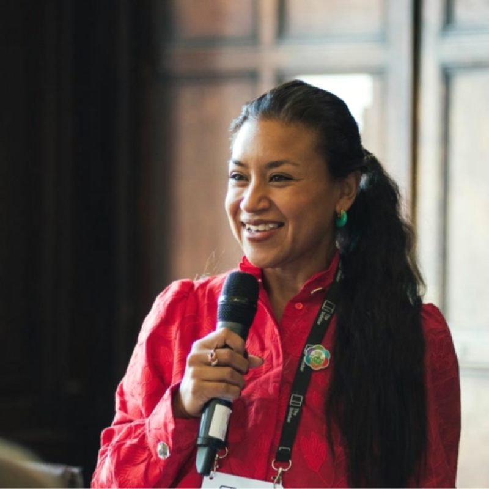
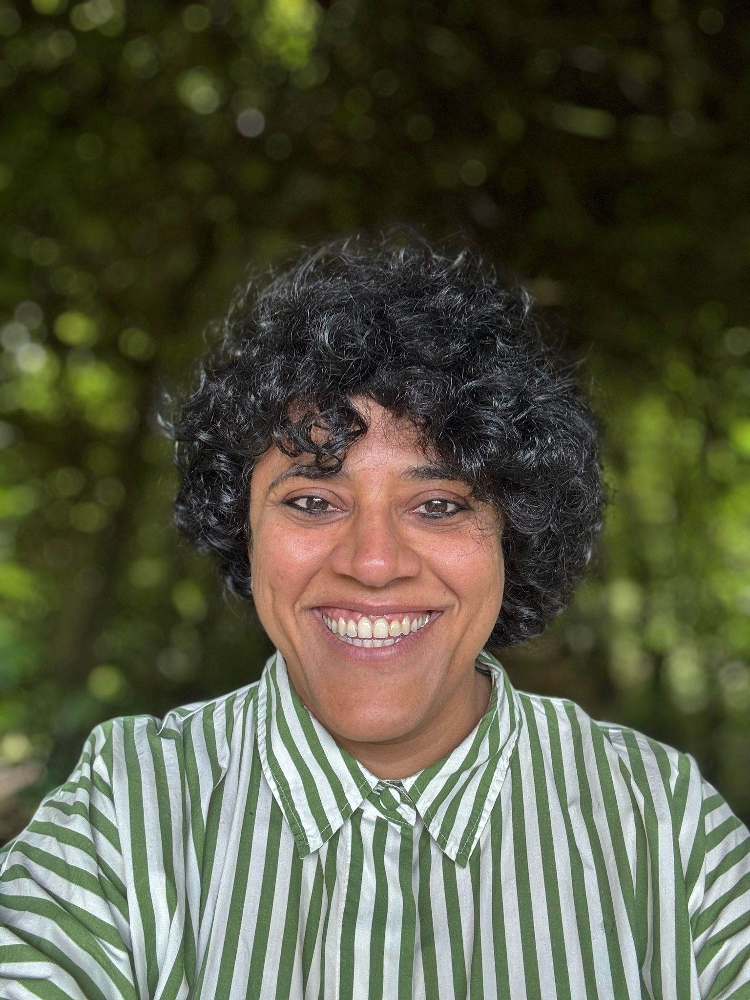

About Us
Learning to Intervene in Complex Systems is a living framework shaped by Raïsa & Jaya and an advisory of facilitators, educators, and researchers working toward just and regenerative futures. It is living because the knowledge that shapes it keeps being made across contexts, experiments, and collaborations that deepen what we understand about change.

Raïsa Mirza
Raïsa Mirza is a systems practitioner and designer with 25 years of experience across more than 25 countries. Currently Senior Director of Global Programs at Legado, she oversees a portfolio of community-centered holistic systems change initiatives worldwide. She co-developed the IB's new educational pathway in systems transformation, now scaling to dozens of schools globally in her previous role as Head of Social Impact Initiatives at UWC Atlantic College. Founder of the Rural Design Network, she has held senior roles at the Tamarack Institute, One Acre Fund, and One Drop Foundation. In 2021 she was named one of 20 Positive Deviants in Canada by the Wolf Willow Institute for Systems Change.
LinkedIn
Jaya Ramchandani
Jaya Ramchandani designs lifelong learning experiences that enable individual and social change. Her work spans shifting narratives about education through writing and public storytelling; creating competency frameworks, books, and short courses; prototyping new models of community learning (e.g., The Story Of, WLWG Short Courses); designing and teaching courses with transformative education programs (e.g., Systems Transformation Pathway at UWC Atlantic), and creating training programs and resources for educators. Her aim is to make personal, social, and systems change more accessible, achievable, and rooted in regenerative values.
LinkedInAdvisory
This framework was first put out into the world for peer validation in January 2026 through Linked In as a channel. The comments and contributions have helped shape the current version.
As an open-source framework, we invite those who see themselves in this work to join us. If you'd like to contribute to future iterations, we welcome your voice.
Lineage
This work carries forward the teaching of the Systems Transformation Pathway at UWC Atlantic College. We acknowledge with gratitude the educators who shaped that pathway and whose practice lives on in this framework.